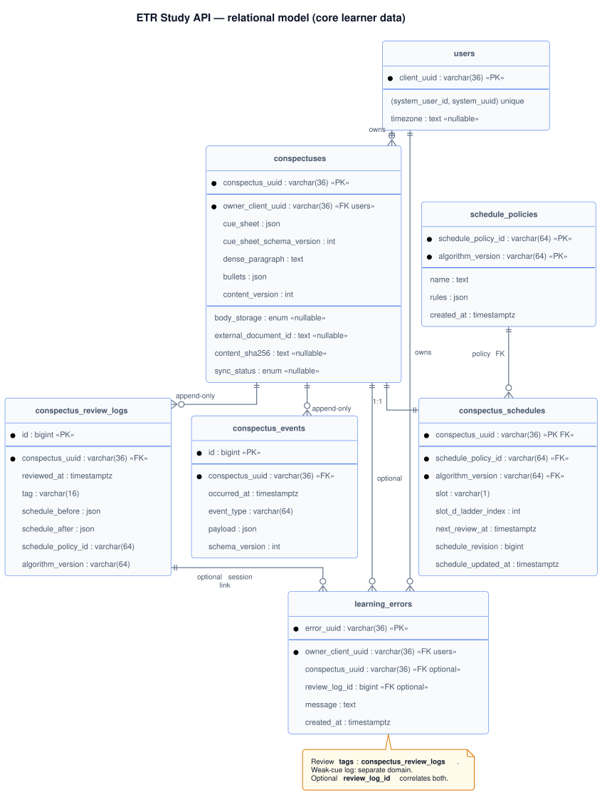

api · Architecture
Component-level architecture of the api service: domain aggregates, the C4 Level 3 component view, the relational schema, and the content-storage contract. For platform-level views (System Context · Containers) and architectural decisions D1–D7, see system design.
Diagram conventions per ADR 0020. Database tables documented per ADR 0029; field-level pages live under api · Database tables.
Domain model — aggregates and lifecycle
The api service owns these aggregates. Each maps to a relational table; cross-aggregate writes happen in one transaction.
-
User (
users) — tenant boundary. Primary keyclient_uuid. External identifiers(system_user_id, system_uuid)resolve to this row. Optionaltimezone(IANA, e.g.Europe/Berlin) supports calendar-day due views; null implies UTC-only semantics. -
Conspectus (
conspectuses, PKconspectus_uuid) — the canonical note after Transform:cue_sheet,dense_paragraph,bullets, optionaltitle,cue_sheet_schema_version(default 1), monotoniccontent_version, plus optional fields for hybrid storage. -
SchedulePolicy (
schedule_policies) — versioned catalogue of spaced-repetition rules. Composite natural key(schedule_policy_id, algorithm_version); immutablerulesJSON. Referenced byconspectus_schedulesso transitions remain auditable after policy updates. -
ConspectusSchedule (
conspectus_schedules, 1:1 with conspectus) — mutable retrieval state only:slot,slot_d_ladder_index,next_review_at,schedule_policy_id+algorithm_version(FK), andschedule_revision(monotonic, used for optimistic concurrency on review writes). -
ConspectusReviewLog (
conspectus_review_logs) — append-only: one row per review with outcome tag,reviewed_at, denormalizedschedule_policy_id+algorithm_version, and immutableschedule_before/schedule_afterJSON. System of record for review outcomes. -
ConspectusEvent (
conspectus_events) — append-only facts that are not review outcomes: creation, content patches, title changes, manual schedule adjustments (SCHEDULE_ADJUSTEDper decision D6). -
LearningError (
learning_errors) — weak cues / mistakes for remediation; semantically distinct from SRS tags. Optionalreview_log_idties an error to a review when both are captured together.
Lifecycle (summary): resolve default schedule_policies row → create
conspectus + initial schedule (schedule_revision = 1) + CREATED event →
query by next_review_at →
review command inserts into conspectus_review_logs and updates conspectus_schedules →
content PATCH appends to conspectus_events →
learning errors stand alone or commit in the same transaction as a review.
C4 Level 3 — components
Internal modules of the api process. Routers receive HTTP, validate input via Pydantic schemas, hand off to domain services, which call repositories. The service is a modular monolith: one process, one transactional database, optional Redis for runtime concerns.

services/portal/internal/uml/architecture/system_component_view.pumlPersistence and schema
The schema separates note content from schedule state.
SchedulePolicy is a first-class catalogue table so schedule_policy_id
is never a dangling string. Each review is append-only in
conspectus_review_logs, with immutable
schedule_before / schedule_after JSON plus
schedule_policy_id + algorithm_version denormalized for audit. Non-review
mutations append to conspectus_events.
Canonical rule: do not mirror every review into conspectus_events.
The review log is the source of truth for scheduling history.
Read models (conspectuses, conspectus_schedules) update in
the same transaction as the corresponding log insert(s).
Entity–relationship

services/portal/internal/uml/architecture/conspectus_er.pumlTables, keys, and roles
Field-level reference for each table lives under Database tables.
| Table | Keys / FK | Role |
|---|---|---|
users |
PK client_uuid; unique (system_user_id, system_uuid) |
Identity and tenant boundary. Optional timezone for local "due today" semantics. |
schedule_policies |
PK (schedule_policy_id, algorithm_version); optional unique policy_uuid |
Immutable versioned rules: name, rules (JSON), created_at. New versions add rows; never mutate history. |
conspectuses |
PK conspectus_uuid; FK owner_client_uuid → users |
Content snapshot: title, cue_sheet (JSON), cue_sheet_schema_version, dense_paragraph, bullets (JSON), content_version. Hybrid-storage fields: body_storage, external_document_id, content_sha256, sync_status. |
conspectus_schedules |
PK/FK conspectus_uuid → conspectuses ON DELETE CASCADE; FK (schedule_policy_id, algorithm_version) |
slot, slot_d_ladder_index, next_review_at, schedule_revision (≥ 1), schedule_updated_at. Optional denormalised owner_client_uuid for index-only due queries. |
conspectus_review_logs |
PK id; FK conspectus_uuid |
Append-only: tag, reviewed_at, schedule_before / schedule_after, schedule_policy_id, algorithm_version. |
conspectus_events |
PK id; FK conspectus_uuid |
Append-only lifecycle: event_type, payload, schema_version, optional correlation_id. |
learning_errors |
PK error_uuid; FK owner_client_uuid; optional conspectus_uuid ON DELETE SET NULL; optional review_log_id |
Pedagogical mistake log — distinct from SRS tags. review_log_id correlates with a specific review when both are recorded. |
idempotency_keys |
Unique (owner_client_uuid, endpoint_path, idempotency_key) |
Deduplication of critical writes; keys must not collide across users (per ADR 0006). |
Indexes — typical queries
- Due workload: composite
(owner_client_uuid, next_review_at)onconspectus_scheduleswhenowner_client_uuidis denormalised; otherwise join onconspectusesfor ownership and index(conspectus_uuid, next_review_at). - Conspectus listing:
(owner_client_uuid, updated_at DESC)onconspectuses. - Review history:
(conspectus_uuid, reviewed_at DESC)onconspectus_review_logs. - Learning errors:
(owner_client_uuid, created_at DESC); optional(conspectus_uuid, created_at DESC). - Idempotency: unique scope must include
owner_client_uuid(or API principal), not only path + key.
Schema design notes
schedule_policiesas a catalogue table. Referencingschedule_policy_idwithout a parent row breaks referential integrity and makes migrations non-replayable.algorithm_versionon the schedule. The schedule row carries bothschedule_policy_idandalgorithm_versionto reference exactly one immutable policy row (composite FK).schedule_revision. Reviews need optimistic concurrency independent of idempotency keys; bump on every schedule mutation.cue_sheet_schema_version. Prevents silent JSON drift; pair with migrations when thecue_sheetshape changes.idempotency_keysscope. Global uniqueness on(endpoint_path, idempotency_key)would let two users collide; scope by owner / principal.learning_errors.conspectus_uuid. PreferON DELETE SET NULLso deleting a conspectus does not orphan errors that should remain for analytics; chooseCASCADEonly if the product decision is to delete with the note.
Content storage — inline JSON vs external document
Default: store cue_sheet, bullets, and dense_paragraph
inline (JSON / TEXT). This respects typical body-size limits, keeps backup and transactions straightforward,
and allows JSON evolution through migrations and validation.
Cue sheet JSON (schema v1)
For cue_sheet_schema_version = 1, cue_sheet is an object with a rows
array. Each row aligns with the three-column mental model:
keyword— short anchor (one to three words).question— question or gap (e.g. "What are the three steps of X?").hint— brief answer cue (optional on early rows).
Validation rejects unknown keys or missing rows when strict mode is on; future schema versions
add columns rather than overloading strings.
Inline vs external — when to switch
| Criterion | Inline in RDBMS | External blob / document store |
|---|---|---|
| Size / SLO | Appropriate while under the configured maximum body size. | Prefer when payloads grow large or binary attachments appear. |
| Versioning | content_version plus event payloads; migrate JSON with scripts. |
Object version / ETag in store; SQL holds pointer and hash. |
| Full-text search | PostgreSQL FTS or generated columns; SQLite is more constrained. | Often a dedicated search tier (operational cost). |
Hybrid-storage failure modes (split writes, drift, orphan blobs) and their mitigations live in the api · Runbooks page — they are an operational concern, not an architectural one.